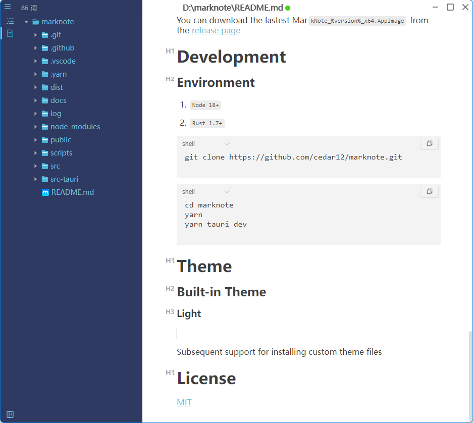

MarkNote


🎉A simple WYSIWYG markdown editor, available for Linux, macOS and Windows.
Features
Multiple Window
Multiple Themes
Support CommonMark Spec, GitHub Flavored Markdown Spec
Support paragraphs and inline style shortcuts
Document Character and Word Statistics
Supports pasting images from the clipboard and dragging external images for insertion
Markdown extensions such as math expressions (KaTeX)
Preview


Download
Windows
You can download the lastest MarkNote_%version%_x64-setup.exe or MarkNote_%version%_x64-en-US.msi from the release page
MacOS
You can download the lastest MarkNote_%version%_x64.dmg from the release page
Linux
You can download the lastest MarkNote_%version%_x64.AppImage from the release page
Development
Environment
Node 18+Rust 1.7+
git clone https://github.com/cedar12/marknote.gitcd marknote
yarn
yarn tauri devTheme
Built-in Theme
Light

Dark